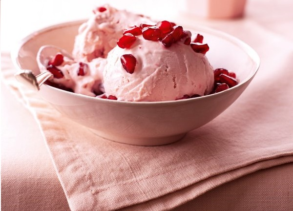

NO-CHURN POMEGRANATE ICE CREAM
INGREDIENTS :
- 3 pomegranates
- 1 lime
- 1½ cups confectioners' sugar
- 2 cups heavy cream
METHOD :
- Juice two of the pomegranates and the lime and strain the juices into a bowl. Save the third pomegranate to use the seeds only.
- Add the confectioners' sugar and whisk to dissolve.
- Whisk in the heavy cream and keep whisking until soft peaks form in the pale pink cream. (If using American heavy-cream or whipping cream in other countries, whisk your cream in a bowl first, until it reaches soft peaks, then whisk in the other ingredients and continue whisking until thick again.)
- Spoon and smooth the ice cream into the airtight container of your choice and freeze for at least 4 hours, or overnight.
- Scatter with some pomegranate seeds before you eat it.